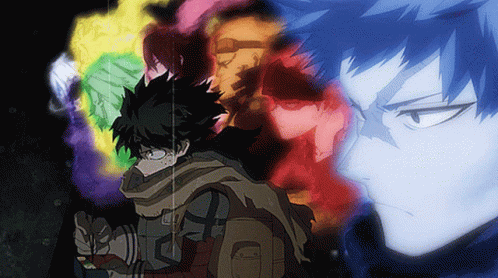

Su informacion principal
Nombre: Izuku Midoriya

Quirk: One For All
Quirk heredado por generaciones que aumenta en forma descomunal su fuerza fisica y mas aspectos derivados. Tambien le permite usar los Quirks de los anteriores portadores del One For All (potenciados)
Wiki con informacion mas detallada de Izuku Midoriya